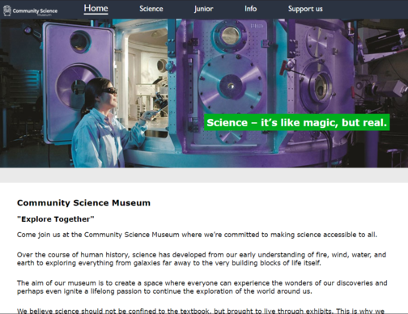
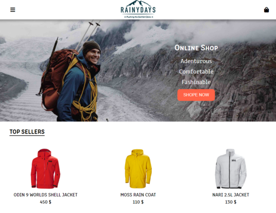
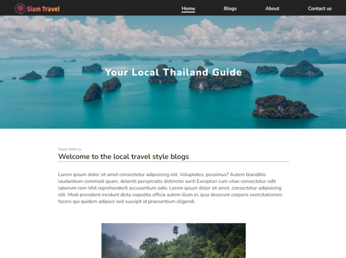

My Project
Community Science | Semester project 1
Community was our first semester project, force on design and HTML & CSS.
Goal was to focused on content management, SEO, mobile responsive, appeal of the website and ease navigation and WCAG guidelines.
The biggest problem i had with this project was responsive deisgn, start to code as website before mobile was a mistake.
RainyDays | First year project
RainyDays is a project we been working across the first years of study, first half was about Deisgn/prototype and HTML & CSS. Later on we learn to use javascript update the functionality at the end of the year.
We update the website due to a subject we were learing like interaction design, javascript and WordPress.
Siam Travel blogg | Project Exam
The 1st year project exam we got was a blog website as task. The content for the website must be store on WordPress.
Put in use what we have learn in the first year. we had around 1 month deadline to make the website with prototype and a report feedback half way tho the project from users to test the project with hotjar.
With the feedback i look at what the users spends most/less time at, does the navigation work the way i wanted to. I use that infomation to update the project.
About me
Education
- 2020 - 2022 Frontend Developer, Noroff
- 2018 - 2019 Personal trainer, Høyskole på vestlandet
- 2015 - 2017 University Admission Certification, Sonans
- 2008 - 2010 Culinary School, Sandsli Vgs
Prior Work Experience
- 2021 - Co-Founder/MuayThai instructor at BSI MuayThai
- 2019 - Security
- 2010 - 2018 - Waiter/Bartender
Hey There,
My name is Nuk, Im a Frontend web developepr base in Bergen, Norway
I am originally from Thailand born in 1992, moved to Norway since 2004.
Recently graduated from Noroff, School of technology and digital media 2022.
My interest in web development started back in 2019 when i took a internet course how to build an website, and turn out to be fun and something i enjoy doing. When im not coding, you find me traning and play video games.